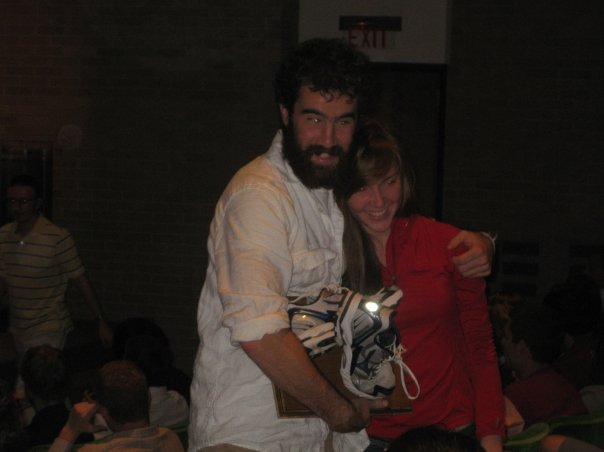

Home
Workouts
Men's Workouts
Women's Workouts
Results
Meet Results
Individual Records
Running in C-Ville
Girls On the Run 5k
Payment
Contact Us
Results
A legacy to be proud of
Fall 2017 Race Results
UNC Sneed-Alleyne Memorial Invitational
NC State Run with the Pack 5k
2017 Cavalier Invitational
Spring 2017 Race Results
2017 Cavalier Invite
Fall 2016 Race Results
2016 Cavalier Invite
Spring 2016 Race Results
NIRCA Nationals-April 8&9
Cavalier Invite- March 26
Winter 2016 Race Results
Vince Brown Invite at CNU - February 6
Happy Valley Invitational at Penn State
Fall 2015 Race Results
2015 Carolina Cup
2015 JMU Invite
2015 Cavalier XC Invitational
2015 NIRCA Mid-Atlantic Regional Championships
2015 NIRCA National Championships
Spring 2015 Race Results
2015 CNU Captain's Invitational
2015 3.1 for Girls on the Run 5k
2015 Indoor PSU Invitational
2015 Battleground Relays
2015 Charlottesville 10-Miler
2015 Monument Avenue 10k
2015 Cavalier Open Invitational
2015 JMU Invitational
Fall 2014 Race Results
2014 Carolina Cup
2014 Cavalier Invitational at Ash-lawn Highland
2014 JMU Invite
2014 NIRCA Mid-Atlantic Regional Championships
2014 NIRCA National Championships
Spring 2014 Race Results
2014 Charlottesville 10 Miler
2014 Monument Avenue 10k
Fall 2013 Race Results
2013 Cavalier Invitational at Ash-lawn Highland
JMU Invite 2013
2013 NIRCA Mid-Atlantic Regional Championships
2013 NIRCA National Championships
Spring 2013 Race Results
Penn State Club Meet - February 9
2013 Charlottesville 10 Miler
Richmond's Fred Hardy Invitational - March 29-30
Fall 2012 Race Results
2012 Cavalier Invitational
2012 JMU Invite
2012 NIRCA Mid-Atlantic Regional Championsh
2012 NIRCA National Championships
Fall 2011 Race Results
2011 Cavalier Invitational
2011 JMU Invite
NIRCA Mid-Atlantic Regional Championships
NIRCA National Championships